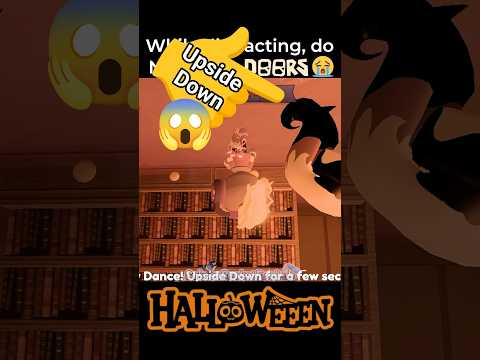

JocDandy's World
4 postări · cele mai noi primele · vezi în blog cu filtre
 TREND SHORTS21 octombrie 2026Dandy's World
TREND SHORTS21 octombrie 2026Dandy's WorldDandy's World Halloween Update: showcase-ul de ~194K în 24h 🎃
Clapsy a postat un short cu update-ul de Halloween din Dandy's World care a strâns ~194K vizualizări în 24 de ore (citite pe 18 oct).… TREND SHORTS17 octombrie 2026Dandy's World
TREND SHORTS17 octombrie 2026Dandy's WorldDandy's World duce Halloween-ul în viața reală
Clapsy are ~257K și crește cu ~36K/h, cu un Halloween IRL în decor real. Ideea VEXU: Halloween-ul din joc, dar în camera lui Andrei, apoi…CONFIRMAT16 octombrie 2026Dandy's WorldDandy's World: Gourdy Shop cu skin-uri noi
Gourdy Shop aduce skin-uri noi din vineri 16 oct, 22:00, până pe 23 oct, 22:00 RO. Update 0.29.7 aduce 2 etaje limitate de Halloween,…
TREND SHORTS14 octombrie 2026Dandy's WorldNU face asta în update-ul de Halloween: 7 secunde, aproape 600K
Short Dandy's World de la Salmon Bucket, ~588K în mai puțin de 2 zile, 7s, fără voce. Formula: avertisment în titlu, acțiune în prima…